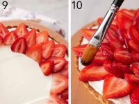

Leivo herkullisia mansikkatartaletteja, joissa yhdistyy ihana rapea pohja ja kermaisen täytteen maku. Täydellinen jälkiruoka kesäisiin juhliin!
Ainekset
Pohja:
- 2 ½ dl vehnäjauhoja
- 100 g voita
- 1 rkl sokeria
- 1 kananmuna
Täyte:
- 2 dl kuohukermaa
- 200 g mascarponejuustoa
- 1 rkl hunajaa
- Tuoreita mansikoita
Valmistusohjeet
1. Nypi voi ja jauhot murumaiseksi. Lisää sokeri ja muna, sekoita nopeasti taikinaksi. Anna levätä jääkaapissa 30 min.
2. Kauli taikina, painele tartalettivuokiin ja paista 200°C 10–12 minuuttia.
3. Vatkaa kerma, mascarpone ja hunaja yhteen. Lusikoi jäähtyneiden pohjien päälle.
4. Koristele mansikoilla.
Vaiheittaiset kuvat
